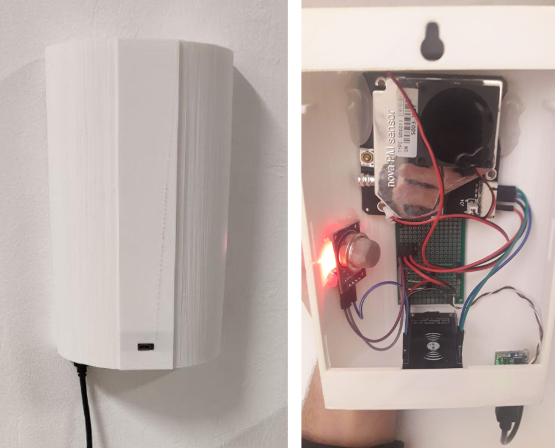

| En el menú superior se pueden ver los datos de la última medida de los aparatos de calidad del aire que hemos elaborado. La descripción del aparato de medida Griego se puede ver en: | |
| En España y Bulgaria se usa el mismo aparato de medida y su descripción de puede ver en: | |
|  | |
| Plugins elaborados por: | |
| Ignacio Rodríguez Mesa y Daniel Muñoz Rodríguez | |
| Alumnos de 2ºASIR del IES Punta del Verde (curso 2020/21) | |